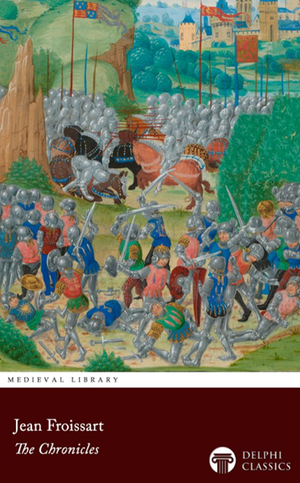
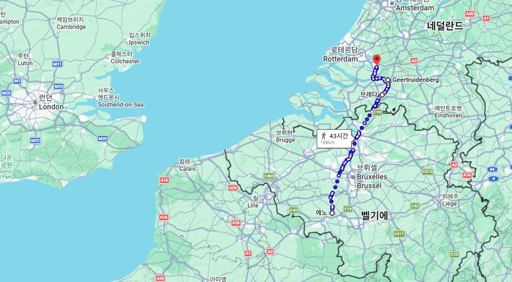
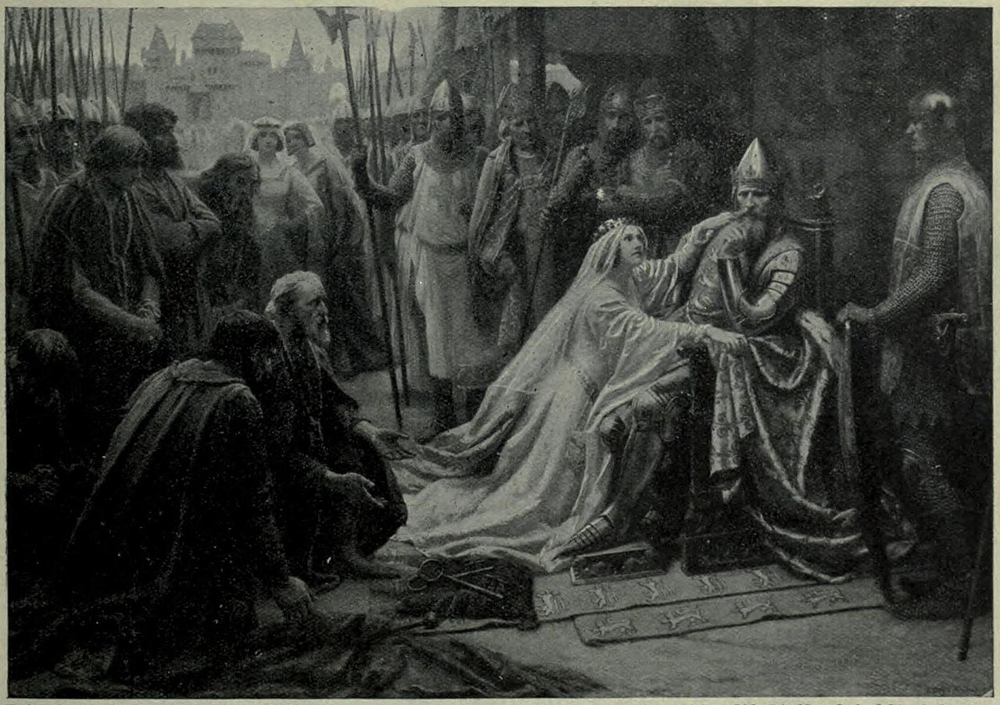
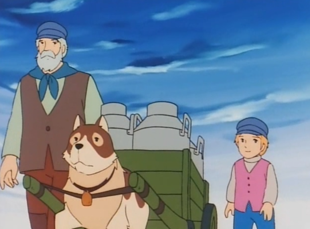
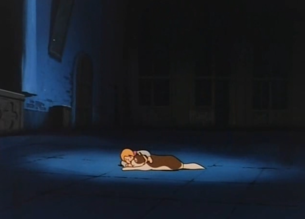
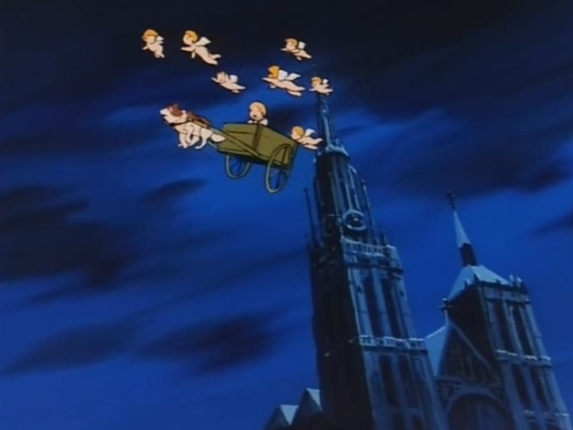
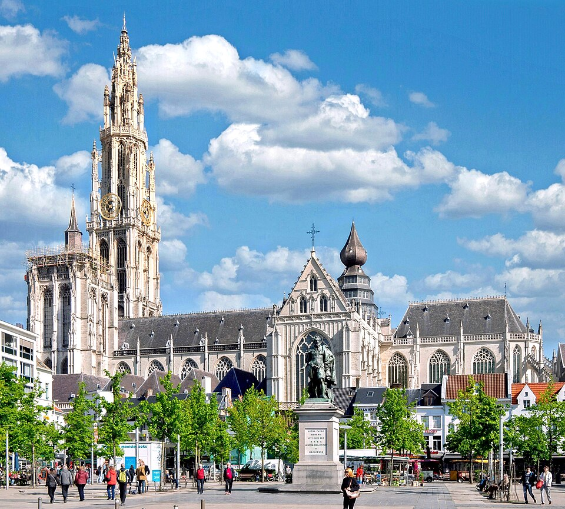
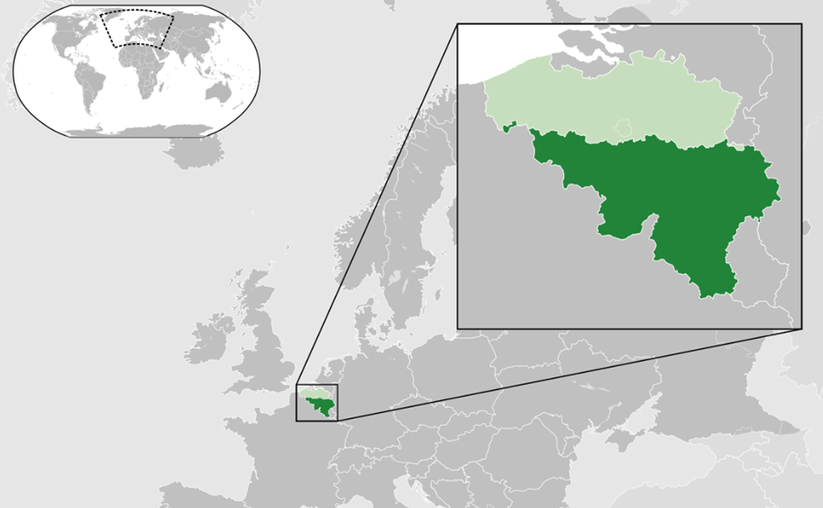
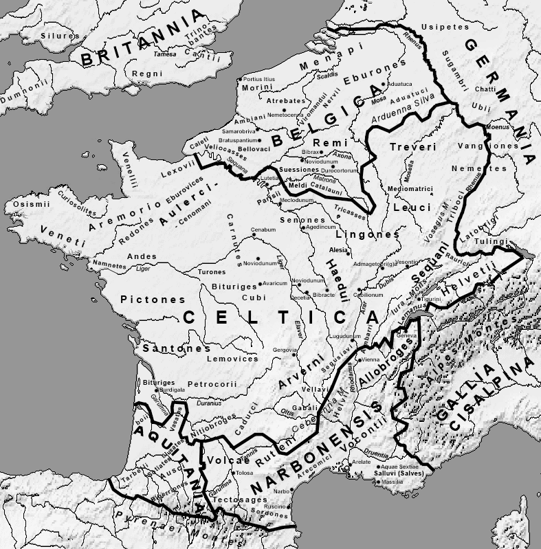
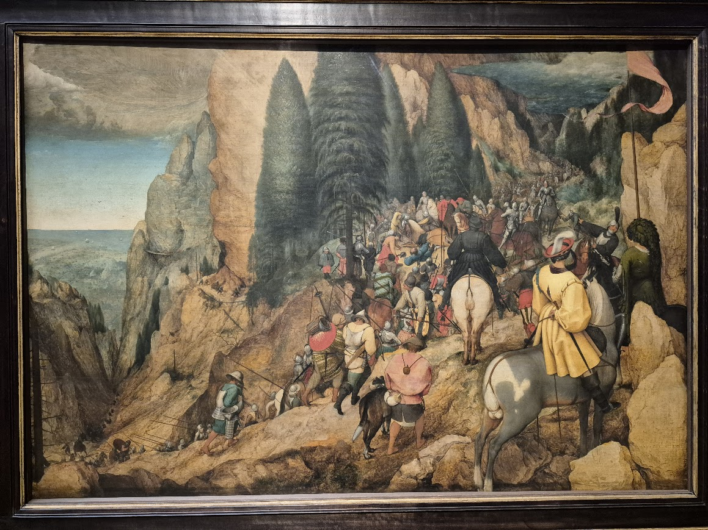

벨기에 이야기 (1) - 플랜더스의 개
게시: 2026-07-13T06:30:20+09:00
프랑크푸르트 제안 속의 핵심인 벨기에 이야기를 시작하려면, 먼저 14~15세기 영국과 프랑스 사이에 벌어졌던 백년전쟁 이야기부터 보셔야 합니다. 백년전쟁을 다룬 연대기 중 대표적인 것이 장 프롸사르(Jean Froissart)라는 사람이 쓴 백년전쟁 초반을 다룬 책입니다. 거기에는 많은 인물들과 지방들이 등장하는데, 헤이노트(Hainault)라는 지방이 특히 자주 나옵니다. 가령 아래 부분을 보시지요.

(프롸싸르의 연대기는 저도 펭귄 문고 시리즈로 읽었는데, 매우 재미있습니다.) "이렇게 하여 Hailnault(영어로는 헤이노트, 프랑스어로는 에노)의 John(영어로는 존이지만 프랑스어로는 장 Jean) 경은 자신의 결심을 더욱 굳히고 용기를 얻게 되었다. 그는 에노 사람들(Hailnaulters)은 알(Halle)에, 브라반트 사람들(Brabanters)은 브레다(Breda)에, (수는 적었지만) 홀란트 사람들(Hollanders)은 도르드레흐트(Dordrecht)에, 그리고 보헤미아 사람들은 헤르트라위덴베르흐(Gertruydenberg)에, 각각 정해진 기한 안에 모이라고 간곡히 당부하였다. 잉글랜드의 왕비는 백작과 백작부인에게 작별을 고하며, 그들이 베풀어준 환대와 예우에 깊이 감사를 표하고, 떠나면서 그들에게 입맞춤하였다." 언듯 보면 백년전쟁 이야기에서 이상한 지명이 많이 나와서 당황할 수 있습니다. 여기서 존 경이라고 불린 사람은 역사적으로는 Jean de Beaumont(보몽의 장)이라고 불리던 사람으로서 헤이노트 백작 기욤 (Guillaume) 1세의 동생이고, 저기 나오는 잉글랜드 여왕의 삼촌입니다. 당시 잉글랜드의 왕은 에드워드 3세로서, 그의 왕비는 헤이노트의 필리피나(Philippa of Hainault)였거든요. 헤이놀트, 즉 에노는 지금의 프랑스 국경에 접해있는 벨기에의 지방명입니다. 그리고 브라반트(Brabant)는 지금의 네덜란드 한 지방명이고, 브레다(Breda)는 브라반트의 도시입니다. 헤르트라위덴베르흐(Gertruydenberg)도 브라반트 내의 도시 이름입니다. 도르드레흐트(Dordrecht)는 지금 네덜란드의 남홀란트(Zuid-Holland)에 있는 도시입니다.

(위에 나온 도시들, 즉 에노-브레다-헤르트라위덴베르흐-도르드레흐트를 이은 선입니다. 거리가 꽤 멉니다.)

(당시 에드워드 3세의 부인인 헤이노트의 필리피나는 유명한 일화를 가지고 있습니다. 1346년 크레시 전투에서 대승을 거둔 에드워드 3세는 프랑스의 핵심 해안 요새 도시인 칼레(Calais)를 포위 공격했습니다. 하지만 칼레의 시민들은 무려 11개월 동안 쥐를 잡아먹으며 처절하게 저항했습니다. 이에 분노한 에드워드 3세는 칼레 함락 이후, 칼레의 전시민을 다 죽이려다 주변의 만류로 대신 칼레 시민들이 뽑은 대표 명사 6명만 처형하겠다고 했습니다. 시장을 비롯한 고위급 6명이 자처해서 나오자, 실제로 처형을 집행하려 했는데, 그때 만삭의 몸으로 현장에 와있던 필리피나가 눈물로 호소하며 그 처형을 막았다는 이야기입니다.) 영국과 프랑스 사이에 전쟁이 벌어졌는데 왜 네덜란드-벨기에 사람들이 저렇게 많이 나오나 싶습니다만, 당시에도 이미 영국과 네덜란드-벨기에는 밀접한 관계를 맺고 있었습니다. 당시 영국의 주요 돈벌이 수단이 양모를 네덜란드-벨기에로 수출하는 것이었거든요. 당시엔 네덜란드라는 이름도 벨기에라는 이름도 없었고, 그냥 자잘한 공작령, 백작령 등으로 쪼개져 있었습니다. 네덜란드-벨기에를 부를 때는 그냥 저지대(Low countries, 프랑스어로는 페이바 Les Pays-Bas, 네덜란드어로 Nederlanden)라고만 불렀고, 보통은 플랑드르(Flandre, Flanders), 브라반트, 홀란트 등 각각의 지방명을 따로 불렀습니다. 영국인들이 양모를 저지대로 수출했던 이유는 간단합니다. 무식한 영국인들에겐 좋은 모직물을 만들 기술이 부족했고, 또 거기서 만든 모직물을 독일과 프랑스, 이탈리아 등 유럽 시장으로 수출할 거래망도 없었기 떄문이었습니다. 한마디로 저부가가치의 농축산물만 수출하는 후진국이었던 셈입니다.

(플랑드르하면 제겐 '플랜더즈의 개' 밖에 생각이 안 납니다. 저 배경이 되는 동네는 벨기에의 안트베르펜, 영어로는 앤트워프(Antwerp) 항구 근처의 가난한 농촌 마을입니다.)

(저 마지막 장면을 보면서 어린 제가 얼마나 울었는지 모릅니다. 이 글 쓰는 지금도 울컥하네요. 사실 저 만화영화의 원작은 영국의 여성 작가가 1871년 벨기에를 여행한 뒤 영감을 얻어 쓴 것입니다. 시대적 배경인 1870년대 벨기에 뿐만 아니라 유럽 전체에서 아동 노동은 당연한 것이었고, 많은 아동들이 비참한 환경에서 노동에 시달리다 비극적으로 희생되었습니다.)

(천사들과 함께 날아가는 네로와 파트라슈 아래에 보이는 저 성당, 그러니까 네로가 꼭 보고 싶어했던 루벤스의 그림이 걸려있던 저 성당은 안트베르펜 대성당(Onze-Lieve-Vrouwekathedraal)입니다.)

(안트베르펜 대성당(Onze-Lieve-Vrouwekathedraal)의 실제 모습입니다. 영어로 하면 Our Lady Cathedral, 즉 성모성당인 거지요. 위에서 나오는 플랜더스의 개에 묘사된 것과 비교해보니... 저 만화가 고증이 아주 잘 된 것은 아니네요.) 그러나 백년전쟁이 벌어지면서 이야기가 달라졌습니다. 당시 저지대의 공작령과 백작령 등은 제각각 프랑스 왕이나 신성로마제국 황제에게 느슨한 형태로 소속되어 있었는데, 전쟁이 나자 봉건제도 상의 주군인 프랑스왕을 무시하고 당장 교역 파트너인 영국편을 드는 곳이 대부분이었습니다. 그나마 플랑드르의 루이 1세는 어려서부터 인연이 있던 프랑스왕을 따랐는데, 영국이 플랑드르로의 양모 수출을 중단하자 당장 일자리를 잃게 된 안트베르펜(Antwerpen), 헨트(Ghent)와 브뤼헤(Brugge) 등의 직조공들과 상인들이 반란을 일으켰습니다. 결국 루이 1세는 망명객 신세가 되었고, 플랑드르는 영국편으로 돌아섰습니다. 이런 역사를 보면 저지대 사람들은 중세시절부터 돈에 환장한 사람들로서 공업과 상업에 치중하고 있었다는 점과 함께, 벨기에와 네덜란드 사이엔 딱히 구별이 없었다는 점을 알 수 있습니다. 그런데 사실 벨기에와 네덜란드 사이엔 구별점이 있긴 했습니다. 바로 언어입니다. 네덜란드 전체는 그냥 게르만어족인 네덜란드어를 쓰지만, 벨기에는 북쪽 플랑드르 지방에서는 네덜란드어 계통인 플라망어를 쓰고, 남쪽의 왈롱(Walloon, 불어로는 Wallonie 영어로는 Wallonia)) 지방에서는 로만어족이자 프랑스어와는 사촌 관계인 왈롱어를 사용합니다. 이 왈롱(Walloon)이라는 이름 자체가 재미있는 어원을 가지고 있는데, 게르만어를 쓰던 프랑크족이 자기들과 다른 로마계 언어를 쓰는 이웃들을 부르던 Walh라는 말에서 나왔습니다. 영국에 침입하여 정착한 게르만계열의 앵글로색슨족이 브리튼 섬에 남아 있던 로마화된 켈트계 원주민들을 부르던 이름이 바로 Wealas였고, 이게 지금의 웨일스(Wales)가 된 것입니다. 즉 왈롱과 웨일스는 지리적으로는 수백 킬로미터 떨어져 있지만, 자기들과는 다른 말을 쓰는 이방인이라는 게르만족 특유의 시선이 대륙과 섬 양쪽에 똑같이 남긴 흔적인 셈입니다. 스위스의 왈리스(Wallis) 주, 독일 남부 발헨제(Walchensee) 호수 이름도 모두 그런 어원을 가지고 있습니다.

(왈롱 지역은 벨기에의 남부 절반입니다. 그 위는 플랑드르 지역이고요. 그런데 사실 벨기에는 2개가 아니라 3개 구역으로 나누어져 있습니다. 그 세번째 구역은 바로 벨기에의 수도 브뤼셀 시를 포함하는 브뤼셀 지역(Brussels-Capital Region)입니다. 사실 브뤼셀 지역은 매우 좁은 구역으로서 플랑드르 한 복판에 섬처럼 있습니다. 그런데도 굳이 3개 구역으로 나눈 이유는 비록 브뤼셀이 플랑드르 한복판에 있지만 역사적 문화적 배경 때문에 언어는 남쪽 왈롱 지역처럼 프랑스어를 쓰기 때문입니다. 벨기에의 남북부 지역 감정도 나름 심각한 것이라서, 이렇게 균형을 맞추고자 3개 지역을 나눈다고 합니다.) 사실 벨기에라는 이름은 유럽 근대에 갑툭튀한 셈인데, 그 기원은 율리우스 케사르가 남긴 '갈리아 땅에서 가장 용맹한 부족인 벨가이인(Belgae)들'이라는 문장에서 나옵니다. 원래 이 말은 인도유럽 고대어에서 '부풀어 오른, 분노한'이라는 뜻의 bhelgh-에서 나왔다는데, 즉 분노한 사람들이라는 뜻이었습니다. 그러나 이후로는 그냥 잊혀진 부족명이 되었다가, 르네상스 시기에 이르러 '저지대'라고만 하면 무식해 보이니 멋있게 로마의 행정구역명이었던 벨기카(Belgica) 또는 복수형인 벨기움(Belgium)을 쓰기 시작했습니다. 나중에 스페인에서 독립한 네덜란드가 스스로 정한 공화국의 초기 정식 명칭도 벨기카 연방(Belgica Foederata)였습니다. 즉 그때는 네덜란드도 벨기에라고 불렀던 것입니다.

(고대 로마 시절, 아직 로마의 정복이 있기 직전의 유럽입니다. 저 지도는 케사르의 기록에 따라 대충 그린 것으로서, 사실 저때의 벨지카 지역과 현재의 벨기에와는 그다지 일치하지 않습니다.) 그러던 저지대는 어쩌다 네덜란드와 벨기에로 분리되게 된 것일까요? 다음 주에 이어질 이야기는 당시 저지대 유명 화가였던 브뤼헐(Pieter Bruegel)이 '다마스커스로 가던 사울이 예수님의 빛에 맞고 회개하여 바울이 되는 장면'을 그린 작품 바울의 회개(De bekering van Paulus)에서 시작합니다.

(작년 가을 오스트리아 빈 여행할 때 제가 빈 미술사 박물관(Kunsthistorisches Museum Wien)에서 직접 찍은 사진입니다. 작년에 이 그림 옆에 붙은 설명을 보던 순간부터 이 벨기에 관련 포스팅을 꼭 하고 싶었습니다.) Source : The Life of Napoleon Bonaparte, by William Milligan Sloane Napoleon and the Struggle for Germany, by Leggiere, Michael V With Napoleon's Guns by Colonel Jean-Nicolas-Auguste Noël https://grokipedia.com/page/Frankfurt_proposals https://fr.wikipedia.org/wiki/Propositions_de_Francfort https://www.napoleon.org/en/history-of-the-two-empires/articles/200-years-ago-1814-the-french-campaign-step-by-step/ https://en.wikipedia.org/wiki/George_Hamilton-Gordon,_4th_Earl_of_Aberdeen https://en.wikipedia.org/wiki/Conversion_of_Paul_(Bruegel) https://en.wikipedia.org/wiki/Jean_Froissart https://www.elfinspell.com/FroissartPrefaceStyle.html https://en.wikipedia.org/wiki/Philippa_of_Hainault https://en.wikipedia.org/wiki/John_of_Beaumont https://en.wikipedia.org/wiki/Belgae https://nl.wikipedia.org/wiki/Onze-Lieve-Vrouwekathedraal_(Antwerpen) https://bbs.ruliweb.com/community/board/300779/read/45461144